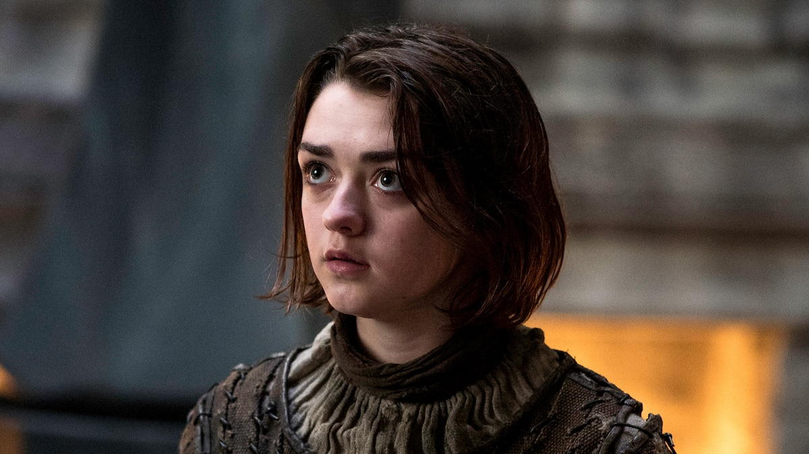

PLAYED BY EMILIA CLARKE
Princess of House Targaryen, living in exile in Essos with her brother, Viserys.
to know more

PLAYED BY MAISIE WILLIAMS
The younger of Ned and Cat's two daughters. A tomboy, she would rather fence than dance. Her direwolf is named Nymeria, after a warrior queen
to know more